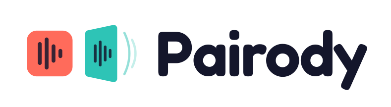

Pick a board: Small has 12 pads (6 pairs), Classic has 16 (8 pairs), and Big has 25 (12 pairs, plus a free tile in the middle). Flip one pad, then another. A match turns green and shows what it was; a miss goes dark again. A perfect board takes one move per pair.
Each pad shows the name of its sound while it plays, like the now-playing card in a music app. Want a real test of your ears? Turn on Difficult mode and you get the sounds only, no names.
Your best score for each deck (fewest moves, then fastest time) is saved on this device and shows next to the deck name. Each board size keeps its own bests, and so does Difficult mode, so a board played sounds-only is never compared with one where you could see the names.
Each deck plays a little differently; the note under the deck buttons explains the one you picked.
Not sure how it works? Tap Demo and Pairody plays a board of whichever deck you picked by itself: it listens, remembers where each sound was, and pairs them up. Demo boards don't count toward your best scores.
Want your own songs? Try Your music (beta) with a YouTube playlist.